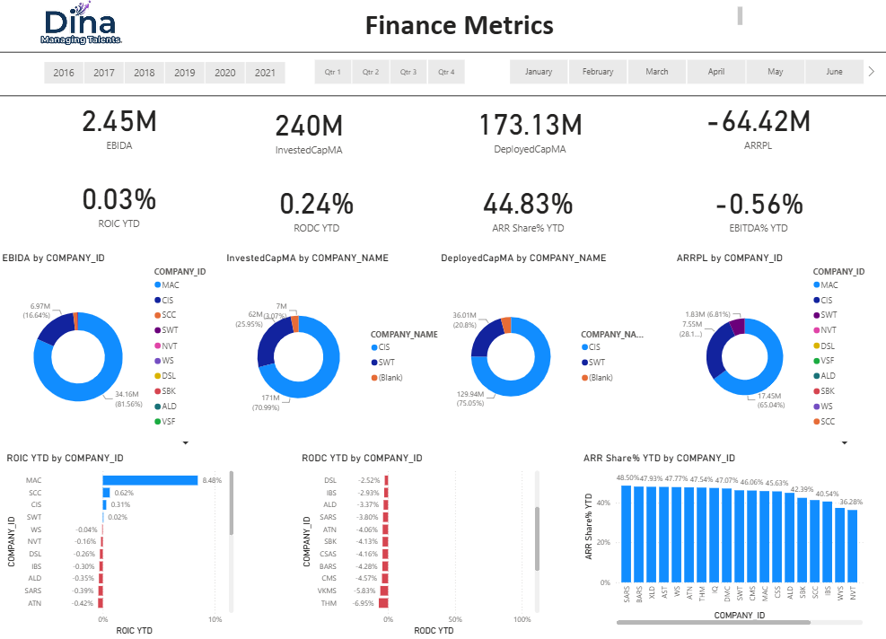

Acquisitions Overview

📈 Acquisitions Overview Performance Insights
This metrics dashboard monitors cumulative investment pipeline sizing, active enterprise deal multipliers, historical timelines, and partner portfolios across global operational regions.
Portfolio Scale & Multipliers Breakdown: The dashboard tracks a total portfolio volume of 41 completed acquisitions, aggregating $180.75M in cumulative Invested Capital which has successfully unlocked $183.10M in gross Acquired Revenues. This indicates highly balanced asset sourcing, with an Acquired Revenue Multiplier tracking at 0.99x and an ARR Multiplier baseline establishing a strong corporate footprint at 1.51x. The software revenue mix remains robust, driven by an Acquired ARR anchor pool of $119.81M and backed by an Acquired NRR pool of $63.29M.
Historical Funding & Regional Matrix: Trailing multi-year data profiles a steep compounding curve between 2016 and 2021, where both Acquired ARR (orange line) and Acquired NRR (dark line) reflect strong upward scalability. Funding velocity peaked dramatically in 2021, generating a maximum expansion of $69.12M in acquired revenues mapping against $67.44M in active capital investments. This transaction ledger records geographic distribution across Australia & New Zealand, BENELUX, Scandinavia, and Canada, mapping precise funding allocations among primary stakeholders like Chris Malouf, Joe Farrugia, and institutional partner Valstone.
Acquisitions Performance

📊 Acquisitions Performance Yield Insights
This metrics dashboard focuses on core asset efficiency velocities, operational expansion growth rates, return margins, and individual corporate segment yields.
Finance Metrics Dashboard

Dashboard Analysis & Key Elements
This executive dashboard displays financial performance metrics cross-referenced by company IDs and names over selectable time filters (Years, Quarters, and Months).
High-Level KPIs
- EBIDA: Formidable absolute standard sitting at 2.45M.
- InvestedCapMA: Total capital allocated to projects is at 240M.
- DeployedCapMA: Actively deployed strategic capital stands at 173.13M.
- ARRPL: Currently experiencing a deficit pool sitting at -64.42M.
Capital & Profitability
- ROIC YTD: Year-to-date Return on Invested Capital stands at a minor 0.03%.
- RODC YTD: Year-to-date Return on Deployed Capital hits 0.24%.
- ARR Share% YTD: Captures a heavy operational bulk at 44.83%.
- EBITDA% YTD: Slightly compressed margin at -0.56%.
Visualizations Breakdown
- Doughnut Charts: Detail EBIDA, Invested Capital, Deployed Capital, and ARRPL distribution across specific Company IDs (such as MAC, CIS, SW1).
- Horizontal Bar Charts: Rank individual Company performance benchmarks for both ROIC and RODC YTD metrics.
- Vertical Bar Chart: Compares the exact breakdown of ARR Share% YTD per corporate entity.